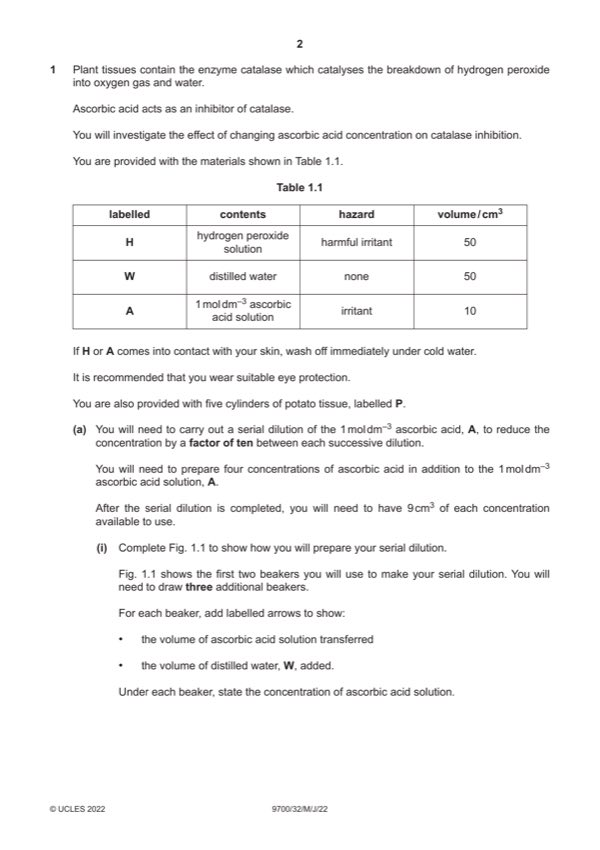

Question 1

Original paper page 2
Part 1(a)(i) — solution
1 correct concentrations (0.1, 0.01, 0.001, 0.0001) and mol dm–3 at least once ; 3
Mark points
- Include the ideas shown in the solution above.
Part 1(a)(ii) — solution
1 heading for independent variable: 6
ascorbic acid concentration / mol dm–3 (before heading for dependent variable) and no units in body of table ;
Mark points
- Include the ideas shown in the solution above.
Part 1(a)(iii) — solution
selects greatest volume from results in (a)(ii) ; 2
calculates correct rate of gas production ;
Mark points
- Include the ideas shown in the solution above.
Part 1(a)(iv) — solution
any two from: 2
Mark points
- Include the ideas shown in the solution above.
Part 1 — solution
repeat, to identify anomalous results or calculate a mean ;
Mark points
- Include the ideas shown in the solution above.
Part 1(b)(i) — solution
temperatures recorded to 0.5 °C ; 2
records the correct rise in temperature ;
Mark points
- Include the ideas shown in the solution above.
Part 1(b)(ii) — solution
yes: rate of reaction is affected by change in temperature and reason 1
or
no: rate of reaction is not affected by change in temperature and reason ;
2022 Page 6 of 8
9700/32 Cambridge International AS & A Level – Mark Scheme May/June 2022
Mark points
- Include the ideas shown in the solution above.
Part 1(c)(i) — solution
1 x-axis: ascorbic acid daily dose / mg 4
and
y-axis: maximum ascorbic acid concentration in blood plasma / mol dm–3 ;
Mark points
- Include the ideas shown in the solution above.
Part 1(c)(ii) — solution
0 mg / day 2
some ascorbic acid is already present in blood / obtained from other foods in the diet / produced by the body ;
500 to 1000 mg / day
maximum rate of absorption (75 mol dm–3) is reached at a dose of 500 mg / day so the concentration does not increase
with higher doses ;
Mark points
- Include the ideas shown in the solution above.